Score the driver, not the corridor
Classifies short IMU windows into smooth driving, sudden acceleration and sudden braking, checks harsh events against the bus route, and reports passenger comfort and relative component duty.
Why a harsh-event count is unfair on a city bus
Four problems that make a raw brake-and-acceleration tally a poor driver score.
The corridor gets the blame
A city bus has to stop, slow for signals and give way at junctions. Route 138 alone has 52 bus stops, 20 signals and 271 junctions. Counting every harsh event scores the route, so two equally skilled drivers can look different because of the corridor they were given.
Cabin vibration looks like aggression
An IMU inside a bus also records road roughness and engine shake. A spike in acceleration is not, by itself, proof that the driver pressed a pedal.
A healing score hides an early event
A score that climbs back after a stretch of smooth driving can bury a dangerous manoeuvre from the start of the trip. Fleet managers need that event to stay visible.
Absolute wear needs failure data
Predicting remaining useful life needs a history of component failures that a small operator often does not have. What they can compare is how hard this bus is being worked against other buses on the same route.
Harsh-event detection, bus comfort and map matching each have a literature of their own. The gap is the join. Scoring rarely uses stops, signals, junction size, curvature and gradient to excuse manoeuvres the road demands. Pedal vision is usually studied apart from the IMU label. Maintenance is usually framed as time-to-failure. And a fluent trip summary can state facts that were never recorded. RouteGuard joins motion classification, optional pedal evidence, OpenStreetMap context and a relative duty comparison, and it restricts the language-model summary to stored journey fields.
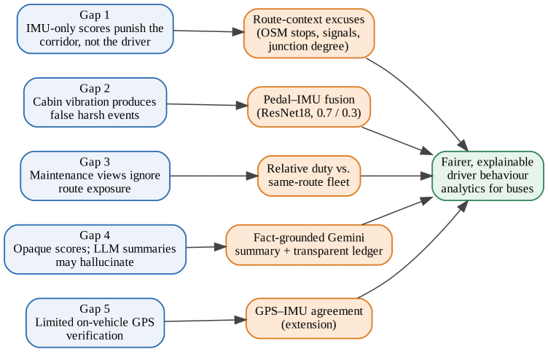
Objectives
- Classify 30-sample IMU windows into smooth driving, sudden acceleration and sudden braking, and estimate passenger comfort from the same motion.
- Estimate continuous brake and throttle positions from footwell images, and fuse that evidence with the IMU stream so vibration alone does not become a harsh event.
- Build route context from OpenStreetMap for real bus corridors and score drivers with a ledger that excuses road-demanded manoeuvres, kept beside a naive event-count ledger.
- Estimate relative maintenance duty for brakes, tyres, transmission, engine and driveline, and suspension, compared with a same-route fleet baseline.
- Run the pipeline as a FastAPI service and a React interface inside the CITOS shell, with Firestore persistence and a trip summary drawn only from stored facts.
Research questions
- RQ1How accurately can a Random Forest separate smooth driving, sudden acceleration and sudden braking from windowed accelerometer and gyroscope features, compared with a per-sample model?
- RQ2Can passenger comfort be estimated from the same IMU windows, and which motion features carry the decision?
- RQ3How accurately can a convolutional network estimate brake and throttle from footwell images, and does fine-tuning on the deployment camera improve that camera?
- RQ4Does a context-aware score that excuses events near stops, signals and major junctions separate road-demanded manoeuvres from driver-caused ones better than a naive event count?
RQ1 to RQ3 are answered with held-out measurements below. RQ4 has a working ledger. Its counted comparison on real trips is still to be collected.
How the research was carried out
Models were trained on held-out splits. Route context was built from mapped bus corridors.
16,867 cleaned samples were mapped to three classes. Acceleration magnitude and jerk were recomputed inside each recording, then grouped into 550 non-overlapping windows of 30 samples.
Random Forests were trained in scikit-learn and scored on a stratified 20% hold-out. Comfort labels are tertiles of an index, not passenger ratings.
53 phone videos and 20 webcam videos supplied time-stamped brake and throttle labels. A custom CNN and an ImageNet ResNet18 were compared, then ResNet18 was fine-tuned for the live camera.
OpenStreetMap corridors for Routes 138, 141 and 177 carry stops, signals, junctions, curvature, gradient and speed limit. A harsh event is map-matched by chainage along the route.
Behaviour and comfort use accuracy, precision, recall and F1. Pedal models use mean absolute error and root mean squared error on positions between 0 and 1.
Motion windows, then an optional look at the pedals
An ESP32 reads the MPU6050 and posts 30-sample windows to the RouteGuard FastAPI service. A footwell camera can add brake and throttle position when it is running.
Behaviour cascade and fusion
- 1Each window becomes a statistical feature vector: magnitude, jerk and gyroscope mean, spread and extremes.
- 2Stage 1 separates smooth driving from aggressive driving. A smooth window stops here.
- 3Stage 2 separates sudden acceleration from sudden braking.
- 4When the footwell camera is on, ResNet18 estimates brake and throttle in [0, 1]. Harshness is the rate of change of those positions, not a single pedal value.
- 5Fusion uses pedal evidence at 0.7 and IMU evidence at 0.3. With no pedal stream the weights fall back to the IMU alone, and the interface says so.
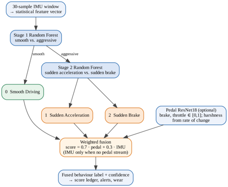
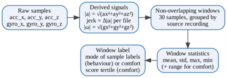
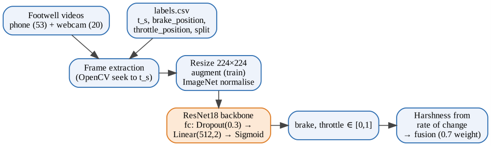
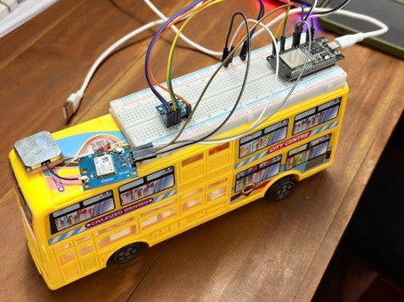
What the device contributes
The MPU6050 is connected to the ESP32 over I²C. Firmware packs accelerometer and gyroscope readings into windows and posts them to the sensor endpoint over Wi-Fi. A NEO-6M receiver is mounted with the patch antenna and already returns position, speed and time. Confirming harsh events with those GPS fixes is designed for a later on-road check.
Comfort runs on every window beside the behaviour cascade and stays out of the driver score. A rough road can feel uncomfortable without being the driver's fault.
Excuse the manoeuvre the road required
Each harsh event is placed by chainage on an OpenStreetMap corridor. The context layer looks ahead and behind for the next stop, signal and major junction, plus curvature, gradient and the speed limit.
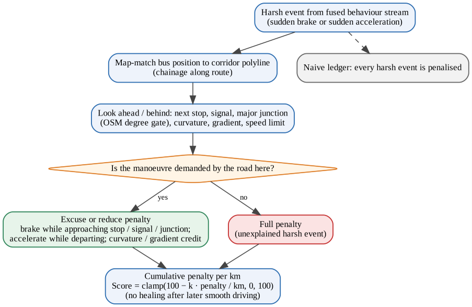
Brake on approach
A sudden brake is excused or reduced while the bus is approaching a stop, a signal or a major junction.
Acceleration on departure
A sudden acceleration is excused or reduced while the bus is leaving a stop, a signal or a major junction.
Curve and gradient credit
Curvature and gradient reduce the penalty for braking before a sharp curve and for accelerating on a climb.
Major junctions only
A junction excuses an event only when its OpenStreetMap degree passes a threshold, so a small side lane does not wipe the penalty.
Unexplained events stay
An event that matches none of these situations takes the full penalty and is marked unexplained.
Two ledgers, one formula
The naive ledger penalises every harsh event. The context-aware ledger applies the excuse rules first. Both use the same per-kilometre formula, so the difference is the rules.
score = clamp(100 − k · penalty / kilometres, 0, 100)
Penalties accumulate and stay. Later smooth driving does not erase an early unexplained event. Dividing by distance lets trips of different lengths be compared. Routes 138, 141 and 177 are loaded from OpenStreetMap. On Route 138 the corridor is 25.01 km, with 52 bus stops, 20 traffic signals and 271 junctions.
How hard this bus is being worked
Duty rises with distance, speed and the extra load of harsh events, then is compared with other buses on the same route. Early in a trip the comparison is damped, because there is still little exposure.
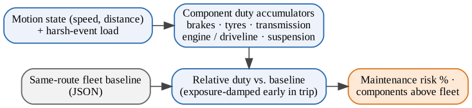
| Component group | What adds duty |
|---|---|
| Brakes | Harsh braking |
| Tyres | Distance, speed and harsh manoeuvres |
| Transmission | Harsh acceleration |
| Engine and driveline | Harsh acceleration and sustained load |
| Suspension | Vibration and harsh events |
The output is a maintenance-risk percentage and a count of components above the fleet level. It answers whether this bus is being worked harder than its peers. It does not estimate time to failure.
After the journey is stored, a Gemini summary may be requested. The model receives only the recorded fields: route, harsh events and whether they were excused, the context-aware score and the maintenance risk.
What the held-out tests showed
Behaviour, comfort and pedal numbers come from the training notebooks. System-level score comparisons that still need an on-road trial are left out.
Behaviour classification
A single IMU sample reached 57.7% accuracy. Sudden-brake samples were most often called sudden acceleration, with recall 0.37. Grouping 30 samples into a window raised accuracy to 76.4% and macro F1 from 0.54 to 0.74.
| Measure | Per-sample Random Forest | Window Random Forest |
|---|---|---|
| Test set | 3,374 samples | 110 windows |
| Input | 12 features, one sample | 17 features, 30-sample window |
| Trees | 400 | 500 |
| Accuracy | 0.577 | 0.764 |
| Macro precision | 0.56 | 0.76 |
| Macro recall | 0.54 | 0.73 |
| Macro F1 | 0.54 | 0.74 |
| Weighted F1 | 0.57 | 0.76 |
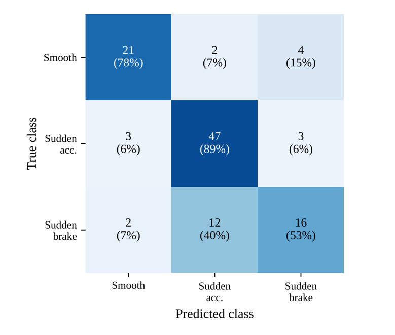
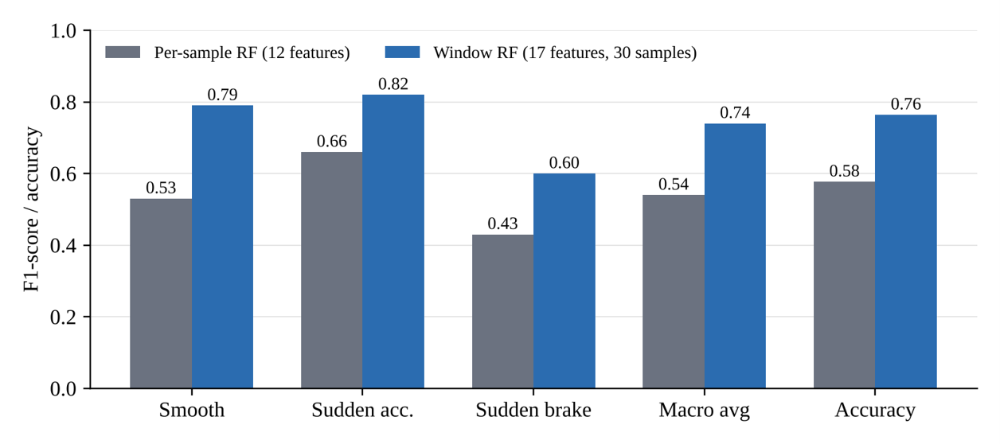
| Class | Precision | Recall | F1 | Support |
|---|---|---|---|---|
| Smooth driving | 0.81 | 0.78 | 0.79 | 27 |
| Sudden acceleration | 0.77 | 0.89 | 0.82 | 53 |
| Sudden brake | 0.70 | 0.53 | 0.60 | 30 |
| Macro average | 0.76 | 0.73 | 0.74 | 110 |
Smooth driving is the decision that protects a fair score: 21 of 27 smooth windows were kept smooth, and 6 were flagged as aggressive. Sudden braking is the weak class. Twelve of 30 brake windows were predicted as sudden acceleration, because the magnitude features do not say whether the vehicle was slowing or speeding up. That is why the cascade, the pedal stream and a later GPS check exist.
Passenger comfort
The comfort Random Forest reached 99.1% accuracy on the same 110 windows, missing one Uncomfortable window. The labels were tertiles of an index built from acceleration spread, jerk mean, jerk max and gyroscope spread, and those features are also model inputs. The result shows that the index can be reproduced live with a confidence band. It does not show that passengers would agree.
| Class | Precision | Recall | F1 | Support |
|---|---|---|---|---|
| Comfortable | 1.00 | 1.00 | 1.00 | 37 |
| Moderate discomfort | 0.97 | 1.00 | 0.99 | 36 |
| Uncomfortable | 1.00 | 0.97 | 0.99 | 37 |
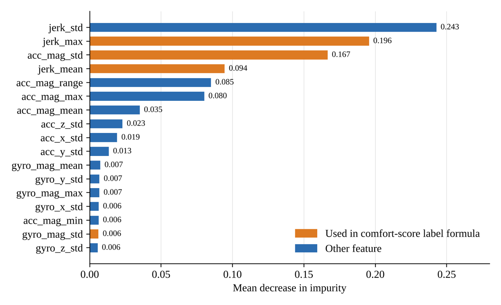
Pedal position
On the phone-video test set, ResNet18 had the lower mean absolute error (0.0673 against 0.0925) and the lower mean RMSE (0.1279 against 0.1708). The gain was on the brake. The custom CNN was slightly closer on throttle MAE.
| Measure | Custom CNN | ResNet18 |
|---|---|---|
| Trainable parameters | 0.42 M | 11.18 M |
| Validation MAE (mean) | 0.0689 | 0.0500 |
| Test MAE, brake | 0.0987 | 0.0403 |
| Test MAE, throttle | 0.0863 | 0.0943 |
| Test MAE, mean | 0.0925 | 0.0673 |
| Test RMSE, mean | 0.1708 | 0.1279 |
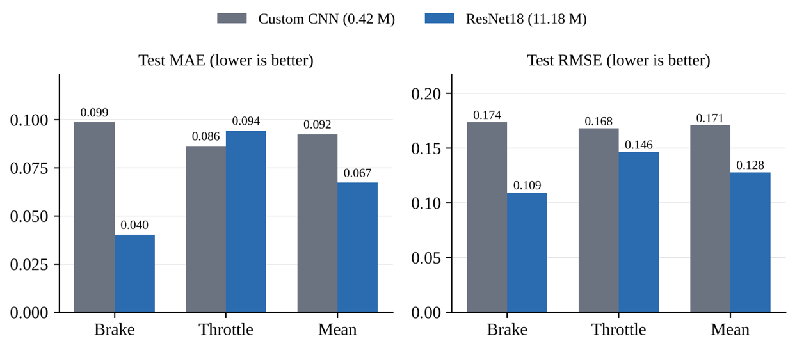
The phone-trained ResNet18 did not transfer to the live webcam. Mean MAE on 208 webcam test frames was 0.2929. After fine-tuning with webcam frames oversampled, it fell to 0.0647. Hard throttle, which the phone model had averaged at 0.29, was predicted at 0.79. Idle throttle fell from 0.12 to 0.017. The best fine-tuning epoch was the first, so the schedule was kept short.
| Webcam test | Phone-trained | After fine-tuning |
|---|---|---|
| MAE, brake | 0.2402 | 0.0318 |
| MAE, throttle | 0.3456 | 0.0977 |
| MAE, mean | 0.2929 | 0.0647 |
| RMSE, brake | 0.2637 | 0.0902 |
| RMSE, throttle | 0.4464 | 0.1523 |
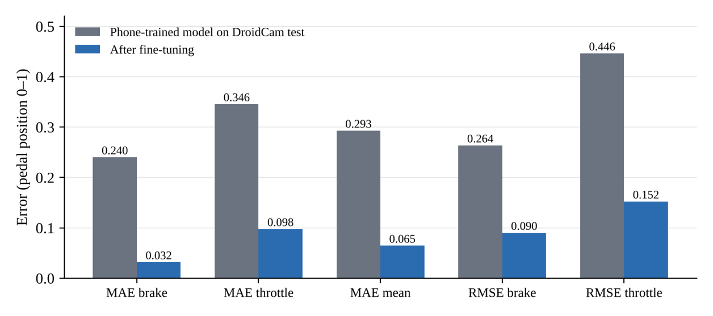
Research journey
- ProblemScore the driver, not the corridor
The component was framed around city-bus routes, where many harsh brakes and accelerations are required by stops, signals, junctions, curves and gradients.
- DataWindows and labelled pedals
IMU samples were corrected and cut into 30-sample windows. Footwell videos from a phone and a webcam were labelled with continuous brake and throttle positions.
- ModelsRandom Forests and ResNet18
A windowed behaviour model beat the per-sample baseline. ResNet18 was selected for the pedals and fine-tuned for the live camera.
- SystemRoute context inside CITOS
FastAPI serves the models, OpenStreetMap context and the two score ledgers. React pages for monitoring, comfort, maintenance, history and alerts sit under the Behaviour tab.
- EvidenceHeld-out tests, open system trial
RQ1 to RQ3 have measured test-set results. The quantitative comparison of context-aware and naive scores, and an on-road check with the on-board GPS, are still to be collected.
Limitations and next steps
- The behaviour and comfort recordings were not collected on Sri Lankan buses, so they describe vehicle motion in general.
- Sudden braking remains the weakest class (F1 0.60). Magnitude and jerk do not carry a sign, so a hard stop and a hard launch can look alike.
- The 99.1% comfort accuracy reproduces an index built from features the model also receives. It is not a passenger rating study.
- Separate test metrics for the two cascade stages were not recorded. The 76.4% figure is the three-class window model.
- The context-aware ledger is implemented. A counted comparison against the naive ledger on real trips has not yet been run.
- Maintenance duty is a relative indicator against the same-route fleet. It is not a remaining-useful-life prediction.
- The NEO-6M GPS receiver is fitted and producing fixes. Using those fixes to confirm or reject IMU events on the road is designed and not yet evaluated.
- A formal on-road study with bus drivers has not been carried out.